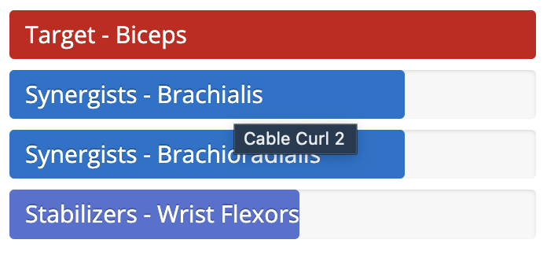
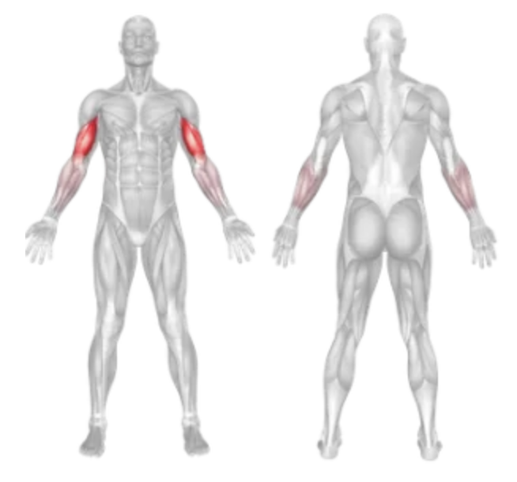

Setup
- Attach a straight bar to the low pulley of a cable machine.
- Stand upright facing the machine, feet shoulder-width apart.
- Grasp the bar with an underhand grip (palms facing up), hands shoulder-width apart.
- Keep your elbows tucked close to your sides and your back straight.
- Engage your core and keep your upper arms stationary throughout the movement.
Execution
- Curl the Bar: Exhale as you curl the bar upward by contracting your biceps. Raise the bar until your forearms are vertical and your biceps are fully contracted.
- Squeeze: Pause briefly at the top of the movement and squeeze your biceps.
- Lower with Control: Inhale as you slowly lower the bar back to the starting position, resisting the pull of the weight.
- Repeat for the desired number of repetitions.
Tips for Effectiveness
- Keep Elbows Stationary: Avoid letting your elbows swing forward to isolate the biceps more effectively.
- Use Controlled Movement: Don’t jerk the weight—use a slow and controlled tempo.
- Don’t Overload: Use a moderate weight that allows you to maintain good form.
- Breath Control: Exhale on the lift, inhale on the return.
Benefits of Cable Curl
- Constant Tension: The cable provides resistance throughout the entire range of motion.
- Better Biceps Activation: Helps isolate the biceps and maximize muscle engagement.
- Joint Friendly: Cables offer smooth motion, reducing stress on joints.
- Versatility: Easy to vary grip width or use different handles to target different parts of the biceps.
Muscles Worked in Cable Curl

